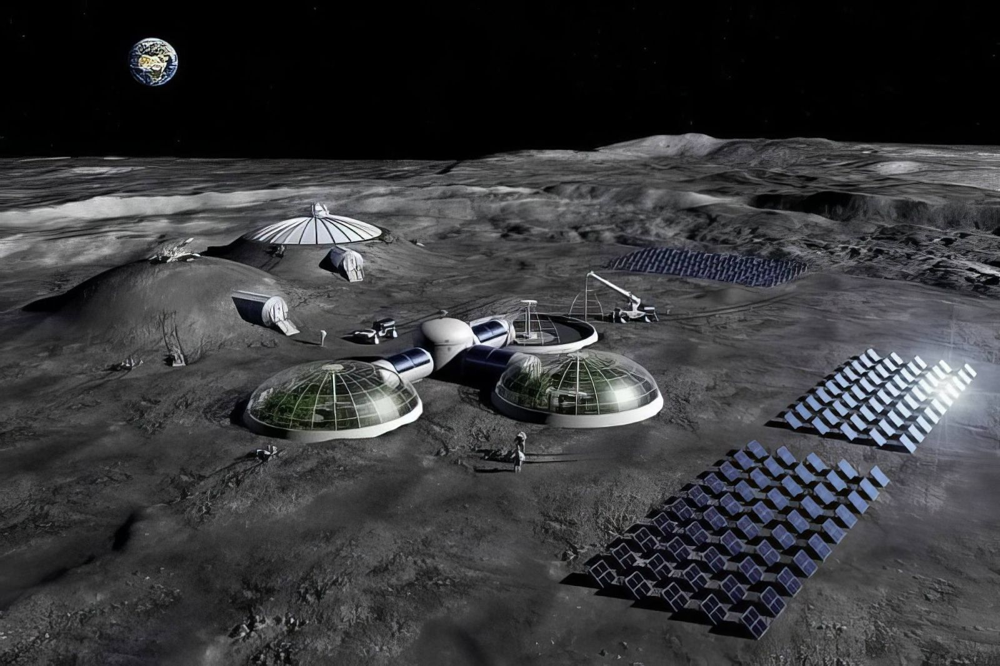
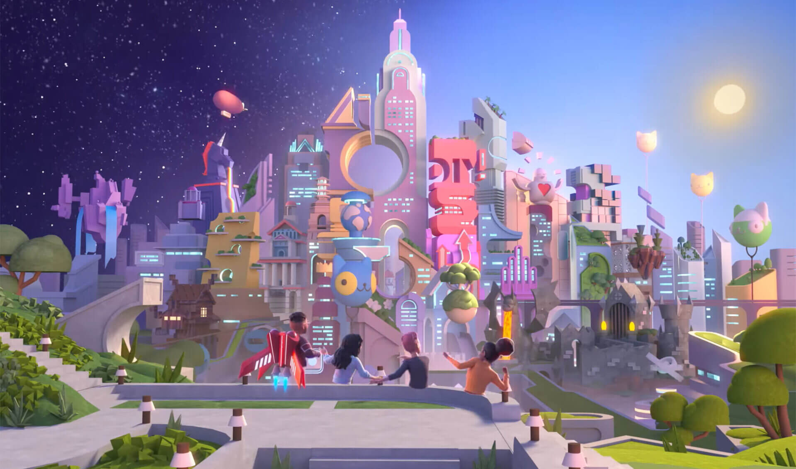
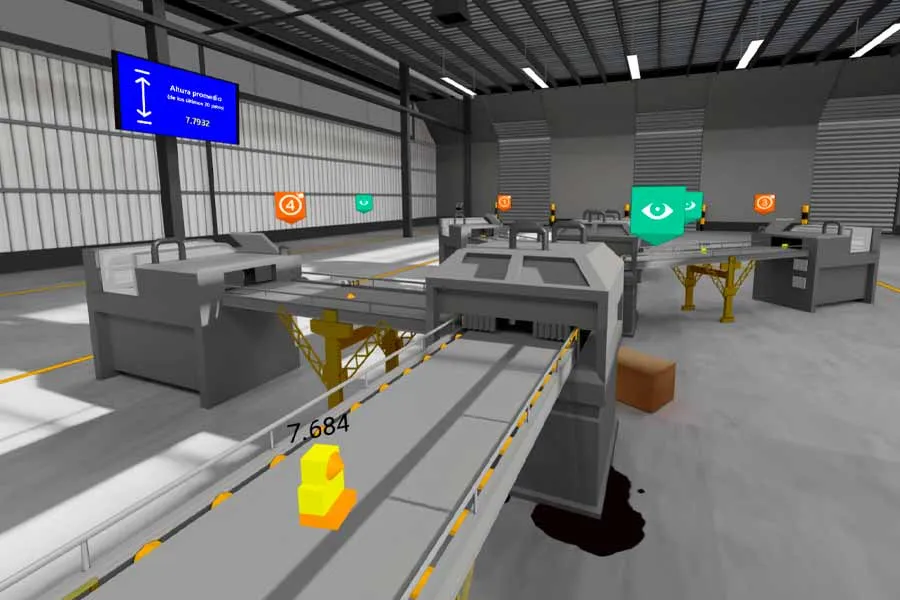

Virtual Shop
Los productos mejores los encontrarás aqui
OTROS MUNDOS VIRTUALES
"Eco-Sistema de la Luna"
Un mundo virtual que simula un ecosistema en la Luna, donde los usuarios pueden explorar y interactuar con un entorno lunar virtual. El mundo podría incluir características como:
- Un paisaje lunar realista con cráteres y montañas.
- Un sistema de gravedad lunar que afecta a los objetos y personajes.
- Una variedad de flora y fauna lunar virtual.
OBJETIVO
Recrear y explorar la superficie lunar mediante realidad virtual.
PROPOSITO DE UN ECOSISTEMA VIRTUAL
- Entrenamiento de astronautas: Simula caminatas lunares (EVA) para preparar a los astronautas en entornos controlados y repetibles.
- Investigación científica: Permite a los científicos estudiar la geología lunar y planificar actividades extravehiculares con datos reales de la superficie.
- Recreación de misiones históricas: Revive misiones como Apolo 15 para reinterpretar datos antiguos y mejorar el análisis científico.
- Planificación de futuras misiones: Ayuda a diseñar rutas, evaluar riesgos y probar escenarios de emergencia para misiones como Artemis III.
- Optimización de recursos: Ofrece una alternativa rentable y rápida frente a entrenamientos físicos en lugares remotos.
SIMULACIONES
Simulaciones espaciales
Caminatas lunares (EVA): Entrenamiento para astronautas en condiciones similares a la gravedad lunar.
Aterrizajes y despegues: Pruebas de alunizaje con módulos espaciales y simulación de regreso a la órbita lunar.
Exploración de cráteres y regiones específicas: Como el cráter Shackleton o el Mar de la Tranquilidad.
Investigación científica
Estudios geológicos: Análisis de rocas, polvo lunar y formaciones del terreno.
Simulación de recolección de muestras: Para entrenar protocolos de misión y uso de herramientas.
Modelado de condiciones ambientales: Temperatura, radiación solar, polvo lunar, etc.
Diseño y prueba de infraestructura
Construcción de bases lunares: Evaluación de hábitats, paneles solares, sistemas de soporte vital.
Simulación de robots y rovers: Pruebas de navegación, recolección de datos y autonomía.
Educación y divulgación
Recorridos virtuales guiados: Para estudiantes y público general.
Recreación de misiones históricas: Como Apolo 11, con narración y datos reales.
Visualización de datos científicos: En tiempo real o con modelos interactivos
Toma de decisiones y planificación
Evaluación de rutas seguras: Para misiones tripuladas o robóticas.
Simulación de emergencias: Fugas de oxígeno, fallos de comunicación, tormentas solares.
QUE SE DEBE DISEÑAR EN ESTE TIPO DE MUNDO
Infraestructura lunar
Base lunar habitable: Módulos de vivienda, laboratorios, áreas de descanso y sistemas de soporte vital.
Paneles solares y sistemas de energía: Diseño de fuentes de energía sostenibles adaptadas a la superficie lunar.
Invernaderos o sistemas de cultivo: Para simular producción de alimentos en condiciones extremas.
Sistemas de comunicación: Antenas, satélites y redes para mantener contacto con la Tierra.
Experiencias de usuario
Rutas de exploración: Caminos seguros para recorrer cráteres, montañas y zonas de interés científico.
Simulación de gravedad lunar: Para que los movimientos sean realistas y educativos.
Actividades interactivas: Recolección de muestras, análisis de terreno, resolución de emergencias.
Tecnología y vehículos
Rovers lunares: Vehículos autónomos o tripulados para exploración y transporte.
Drones o robots: Para tareas de mantenimiento, vigilancia o investigación.
Simulación de alunizaje: Diseño de zonas de aterrizaje y despegue para módulos espaciales.
Ambiente y entorno
Terreno lunar realista: Cráteres, polvo lunar, formaciones rocosas basadas en datos reales.
Ciclo de luz y sombra: Simulación de días lunares (que duran 29 días terrestres).
Eventos naturales: Tormentas solares, impactos de meteoritos, variaciones de temperatura.
Elementos educativos
Paneles informativos: Datos científicos, historia de la exploración lunar, misiones espaciales.
Misiones guiadas: Actividades con objetivos específicos para estudiantes o visitantes.
Gamificación: Retos, logros y recompensas para fomentar el aprendizaje
ELEMENTOS QUE PODEMOS SIMULAR
Depende del objetivo del proyecto
Depende del objetivo del proyecto
Objetivo del mundo virtual - ¿Qué deberías simular?
Entrenamiento de astronautas: Caminatas lunares, gravedad reducida, recolección de muestras, emergencias
Educación y divulgación: Misiones históricas, paneles informativos, recorridos guiados
Investigación científica: Geología lunar, radiación, simulación de terreno real
Diseño de infraestructura: Bases lunares, sistemas de energía, hábitats
Videojuego o experiencia lúdica: Exploración libre, retos, gamificación, vehículos
Puedes construir por módulos
No necesitas hacerlo todo de golpe. Puedes empezar por:
Terreno lunar realista
Una base lunar básica
Un rover funcional
Misiones simples de exploración
Y luego ir agregando más elementos según el tiempo, recursos y necesidades.
Ventajas de simular por partes
Más fácil de desarrollar y probar.
Permite retroalimentación temprana.
Puedes adaptar el contenido a distintos públicos (científicos, estudiantes, gamers).
QUE SE DEBE IR APRENDIENDO CUANDO LAS PERSONAS VAN NAVEGANDO POR SU MUNDO
Exploración espacial
Cómo se preparan las misiones lunares: Desde el lanzamiento hasta el alunizaje.
Historia de la exploración lunar: Misiones Apolo, descubrimientos clave, y planes futuros como Artemis.
Tecnología espacial: Módulos de aterrizaje, trajes espaciales, rovers y hábitats.
Geología lunar
Tipos de terreno: Cráteres, mares lunares (mare), montañas y regiones polares.
Formación de la Luna: Teorías sobre su origen y evolución.
Minerales y recursos: Qué materiales hay en la superficie y cómo podrían usarse.
Ciencia aplicada
Efectos de la gravedad lunar: Cómo se mueve el cuerpo humano y los objetos.
Radiación y clima espacial: Cómo afecta a los astronautas y a los equipos.
Cultivo en ambientes extremos: Simulación de invernaderos y producción de alimentos.
Habilidades prácticas
Resolución de problemas: Emergencias simuladas como fallos de oxígeno o pérdida de comunicación.
Toma de decisiones: Elegir rutas seguras, administrar recursos, coordinar tareas.
Trabajo en equipo: Si el entorno es multijugador, puedes colaborar como en una misión real.
Educación interdisciplinaria
Física y matemáticas: Aplicadas a trayectorias, gravedad, energía solar.
Ingeniería: Diseño de estructuras, vehículos y sistemas de soporte vital.
Ecología espacial: Cómo crear un ecosistema autosustentable fuera de la Tierra.
"La Ciudad de los Sueños"
Un mundo virtual que permite a los usuarios crear y explorar sus propios sueños y deseos. El mundo podría incluir características como:
- Un entorno surrealista y onírico que cambia según los pensamientos y emociones del usuario.
- La capacidad de crear y personalizar objetos y personajes virtuales.
- Un sistema de narrativa que se adapta a las acciones y decisiones del usuario.
OBJETIVO
La Ciudad de los Sueños en un mundo virtual tiene como objetivo principal crear un entorno inmersivo donde las personas puedan explorar, aprender, crear y vivir experiencias que reflejen sus aspiraciones personales, sociales y culturales.
Objetivos generales
Fomentar la imaginación y la creatividad: Permite a los usuarios diseñar espacios, personajes y narrativas que representen sus sueños.
Explorar estilos de vida ideales: Simula una ciudad utópica con acceso a educación, arte, tecnología, naturaleza y convivencia pacífica.
Desarrollar habilidades sociales y emocionales: A través de interacciones virtuales, toma de decisiones y resolución de conflictos.
Inspirar metas personales y profesionales: Espacios dedicados a la autoexploración, emprendimiento, vocación y bienestar.
Aplicaciones educativas y culturales
Aprendizaje experiencial: Museos interactivos, escuelas virtuales, talleres creativos.
Diversidad cultural: Representación de distintas culturas, idiomas y tradiciones en un entorno armonioso.
Simulación de profesiones: Áreas donde los usuarios pueden experimentar roles como arquitecto, médico, artista, etc.
Impacto social y emocional
Promover valores positivos: Como la empatía, la colaboración, la inclusión y el respeto.
Espacios de reflexión y bienestar: Zonas para meditación, terapia virtual, desarrollo personal.
Construcción de comunidad: Fomentar la conexión entre personas con intereses y sueños similares.
SIMULACIONES
En La Ciudad de los Sueños, puedes simular una amplia gama de experiencias que reflejan aspiraciones humanas, ideales sociales y escenarios utópicos. Este mundo virtual está diseñado para explorar lo que podría ser posible si los límites físicos y sociales se desvanecieran. Aquí te muestro lo que puedes simular:
Vida urbana ideal
Barrios temáticos: Zonas dedicadas al arte, ciencia, naturaleza, tecnología, espiritualidad, etc.
Transporte futurista: Vehículos eléctricos, trenes suspendidos, movilidad aérea personal.
Arquitectura soñada: Edificios orgánicos, estructuras flotantes, casas inteligentes.
Creatividad y expresión
Galerías interactivas: Donde los usuarios pueden exponer sus obras o crear en tiempo real.
Escenarios musicales y teatrales: Para simular conciertos, obras, o performances.
Diseño libre de espacios: Construye tu propio rincón de la ciudad con tus reglas estéticas.
Desarrollo personal
Centros de meditación y bienestar: Espacios para relajación, terapia virtual y crecimiento emocional.
Simulación de profesiones soñadas: Prueba cómo sería ser chef, astronauta, diseñador, maestro, etc.
Escuelas del futuro: Aprendizaje personalizado, gamificado y colaborativo.
Convivencia y sociedad
Comunidades inclusivas: Donde se promueve la empatía, el respeto y la diversidad.
Gobiernos participativos: Simula sistemas democráticos, cooperativos o experimentales.
Economías alternativas: Basadas en trueque, reputación, creatividad o sostenibilidad.
Fantasía y exploración
Ciudades flotantes o subterráneas: Lugares imposibles en el mundo real.
Viajes interdimensionales: Portales a otros mundos, sueños o realidades paralelas.
Simulación de sueños lúcidos: Donde puedes controlar el entorno como si fuera tu mente.
ELEMENTOS QUE PUEDO SIMULAR
¿Cómo decidir qué simular?
Propósito del mundo virtual - Elementos clave a simular
Educativo: Escuelas del futuro, rutas de aprendizaje, profesiones soñadas
Artístico: Galerías, murales colaborativos, escenarios creativos
Emocional y terapéutico: Zonas de meditación, bienestar, reflexión personal
Social y comunitario: Comunidades inclusivas, sistemas de convivencia, economías alternativas
Fantasía y exploración: Ciudades flotantes, portales interdimensionales, sueños lúcidos
Puedes construir por módulos
No necesitas hacerlo todo de golpe. Puedes empezar por:
Un barrio temático (como el artístico o ecológico).
Un centro de aprendizaje o desarrollo personal.
Un sistema de transporte futurista.
Una experiencia narrativa que guíe al usuario por la ciudad.
Ventajas de simular por partes
Más fácil de desarrollar y probar.
Permite recibir retroalimentación temprana.
Puedes adaptar el contenido a distintos públicos.
QUE SE DEBE APRENDER CUANDO SE NAVEGA POR ESTE MUNDO
Navegar por La Ciudad de los Sueños debe ser una experiencia de aprendizaje integral.
Autoconocimiento
Descubrir tus talentos: Al interactuar con profesiones, actividades creativas y retos personales.
Reconocer tus emociones: Mediante espacios de reflexión, meditación y bienestar emocional.
Tomar decisiones conscientes: En simulaciones que te invitan a pensar en tus valores y prioridades.
Educación interdisciplinaria
Arte y cultura: Aprendes sobre estilos artísticos, historia del arte y formas de expresión.
Ciencia y tecnología: Conoces inventos, principios científicos y cómo se aplican en una ciudad ideal.
Historia y sociedad: Exploras modelos sociales, culturas diversas y momentos históricos clave.
Convivencia y ciudadanía
Empatía y respeto: Al convivir con personajes diversos y resolver conflictos sociales.
Participación comunitaria: Aprendes sobre liderazgo, cooperación y toma de decisiones colectivas.
Inclusión y diversidad: Descubres formas de vida distintas y cómo construir una sociedad más justa.
Creatividad aplicada
Diseño de espacios: Arquitectura, urbanismo, decoración y ambientación.
Narrativas interactivas: Creas historias, personajes y mundos dentro del mundo.
Expresión artística: Pintura, música, escultura, escritura, todo en formato digital y colaborativo.
Pensamiento futurista
Imaginar ciudades del mañana: Con tecnologías limpias, movilidad avanzada y convivencia armónica.
Simular utopías: ¿Cómo sería una sociedad sin violencia, sin desigualdad, sin límites?
Explorar mundos paralelos: Donde los sueños se convierten en realidades virtuales.
"El Museo de la Memoria"

Un mundo virtual que permite a los usuarios explorar y interactuar con recuerdos y memorias de personas de diferentes épocas y culturas. El mundo podría incluir características como:
- Un entorno que simula un museo virtual con salas y exposiciones que representan diferentes épocas y culturas.
- La capacidad de interactuar con objetos y personajes virtuales que representan recuerdos y memorias.
- Un sistema de narrativa que se adapta a las acciones y decisiones del usuario.
OBJETIVO DEL MUNDO VIRTUAL
Conservar la memoria colectiva: A través de testimonios, documentos, imágenes y reconstrucciones históricas.
Fomentar la empatía y la reflexión: Al permitir que los visitantes vivan experiencias que los conecten emocionalmente con el pasado.
Educar sobre derechos humanos, justicia y paz: Mediante recorridos temáticos que abordan conflictos, dictaduras, genocidios, migraciones, resistencias y reconciliaciones.
Dar voz a los olvidados: Visibilizando historias personales, comunidades marginadas y luchas sociales.
¿Qué podemos simular en este mundo?
Escenarios históricos: Reconstrucción de momentos clave como marchas, protestas, exilios, desapariciones o liberaciones.
Testimonios interactivos: Voces de sobrevivientes, familiares, activistas o testigos que narran sus vivencias.
Líneas del tiempo vivas: Donde los usuarios pueden recorrer décadas y ver cómo evolucionaron los hechos.
Espacios simbólicos: Como altares, muros de nombres, salas de silencio o jardines de la memoria.
Procesos judiciales o de reconciliación: Simulación de juicios, comisiones de verdad o actos de perdón.
¿Qué debes diseñar en este mundo?
Salas temáticas: Cada una dedicada a un periodo, evento o comunidad específica.
Narrativas inmersivas: Que guíen al visitante con voz, música, imágenes y decisiones éticas.
Elementos interactivos: Paneles, objetos, documentos que se pueden explorar o activar.
Espacios de reflexión: Donde el usuario pueda escribir, compartir o guardar sus pensamientos.
Recorridos personalizados: Según el perfil del visitante (estudiante, investigador, familiar, turista).
SE PUEDE SIMULAR:
- Una sala temática bien diseñada.
- Agrega testimonios y documentos clave.
- Luego incorpora elementos interactivos y simbólicos.
- Finalmente, expande hacia otros eventos o regiones.
La profundidad emocional y educativa puede lograrse con pocos elementos bien pensados.
¿Qué puedes ir aprendiendo mientras navegan?
Historia viva: No solo fechas, sino contextos, causas y consecuencias humanas.
Empatía y conciencia social: Al conectarte con historias reales y dolorosas.
Derechos humanos y justicia: Cómo se violan, cómo se defienden, cómo se reparan.
Diversidad cultural y resistencia: Conocer luchas de pueblos indígenas, migrantes, mujeres, jóvenes.
Pensamiento crítico: Reflexionar sobre el poder, la memoria, el olvido y la verdad.
"La Fábrica de la Creatividad"
Un mundo virtual que permite a los usuarios crear y experimentar con diferentes formas de arte y expresión. El mundo podría incluir características como:
- Un entorno que simula un taller de arte virtual con herramientas y materiales para crear diferentes formas de arte.
- La capacidad de crear y personalizar objetos y personajes virtuales.
- Un sistema de retroalimentación que proporciona críticas y sugerencias constructivas sobre la creatividad del usuario.
OBJETIVO DEL MUNDO VIRTUAL
Fomentar la creatividad en todas sus formas: arte, diseño, escritura, música, tecnología, emprendimiento.
Ofrecer un espacio seguro para experimentar: sin juicios, sin errores, solo posibilidades.
Impulsar la colaboración entre mentes creativas: talleres, proyectos colectivos, laboratorios de ideas.
Transformar la inspiración en acción: convertir ideas abstractas en prototipos, obras o experiencias.
¿Qué podemos simular en este mundo?
Estudios de arte virtuales: pintura, escultura, diseño gráfico, animación.
Laboratorios de invención: donde se crean prototipos de objetos, apps, juegos o soluciones sociales.
Salas de escritura creativa: para cuentos, guiones, poesía, cómics o novelas interactivas.
Escenarios musicales: composición, mezcla, interpretación y conciertos virtuales.
Talleres colaborativos: donde varios usuarios trabajan juntos en una obra o proyecto.
Exposiciones y ferias creativas: para mostrar, compartir y recibir retroalimentación.
¿Qué debes diseñar en este mundo?
Zonas temáticas: arte visual, música, escritura, tecnología, moda, arquitectura.
Herramientas interactivas: pinceles digitales, sintetizadores, editores de texto, bloques de construcción.
Espacios de inspiración: murales, frases, sonidos, imágenes que despierten ideas.
Áreas de colaboración: mesas de trabajo, pizarras compartidas, salas de lluvia de ideas.
Galerías virtuales: para exhibir creaciones y recibir comentarios.
Rutas creativas: desafíos, misiones o recorridos que estimulan la imaginación.
¿Es necesario simular todo lo anterior?
No. Puedes empezar por lo esencial y expandir según tus objetivos:
- Diseña primero una zona creativa principal (como un estudio de arte o un laboratorio de ideas).
- Agrega herramientas básicas para crear y compartir.
- Luego incorpora espacios de colaboración y exposición.
La clave es que el entorno invite a crear, no que esté saturado de funciones.
¿Qué se puede ir aprendiendo mientras los usuarios navegan?
Técnicas artísticas y narrativas: pintura, escritura, música, diseño.
Pensamiento creativo y divergente: cómo generar ideas originales y resolver problemas de forma innovadora.
Colaboración y comunicación: trabajar en equipo, dar y recibir retroalimentación.
Autoconocimiento: descubrir tus talentos, pasiones y estilo creativo.
Gestión de proyectos: planear, ejecutar y presentar tus ideas.
Confianza en tu voz creativa: aprender que tu forma de crear es válida y valiosa.